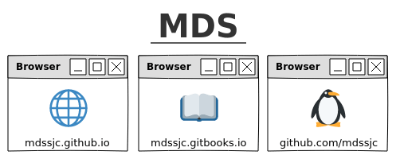

Sobre…
O que é?
O sistema MDS é um pragmático compilado de estudos sobre o tema Arquitetura de Software e Testes com Algoritmos e Mineração de Dados nas tecnologias Java, Lisp, Haskell, Emacs, C e GNU/Linux, aplicados como base no processo de desenvolvimento do aplicativo Citações, sendo composto pelos elementos:

@mds: git *
- Página: material teórico temporal no formato de um blog.
- Livro: material teórico atemporal no formato de um framework de desenvolvimento, para ser utilizado em estudos e consultas.
- Repositório: armazenamento e distribuição do objeto em estudo.
O acesso ao Livro e Repositório será através da barra de navegação localizado no topo da página.